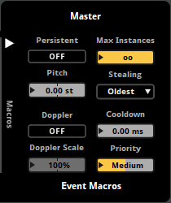
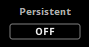
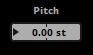
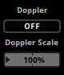
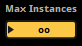
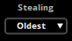
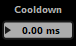
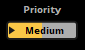

FMOD Studio User Manual 1.10
Each event in FMOD Studio has macro controls to provide further control over your event's pitch, how your events are created, how many event instances can exist, and how they behave when too many instances are created in game.


The persistent property is used to keep the event instance playing until it is explicitly stopped.
If the persistent option is enabled, it forces an event to continue playing even when it is not producing audio and would otherwise stop.
If the persistent property is not enabled an event will stop on its own if no instruments are triggered and the playback position of the timeline is beyond the end of the timeline (ie. beyond the end of the last marker or instrument trigger region).
The persistent property is used to avoid situations such as an event that will only trigger an instrument once its parameter reaches a certain value, but it is automatically stopped due to no audio being produced. For example, a health event that only produces a heartbeat sound when the parameter monitoring the players health reaches below 20% (remaining silent when healthy).
Snapshots always behave in a persistent fashion.

The pitch property of the event adjusts the sample rate of all instruments placed in the event. If any instruments in the event have had their pitch properties altered, this is summed together with the event macro's pitch property.
When adjusting the sample rate in such a manner, the playback speed of the event is affect. This speeds up or slows down the event and therefore raises or lowers the output pitch of the event.
You could use this pitch in game to give the illusion of a fast-forwarding tape when increased, or of bullet time when decreased.

The Doppler property provides an automatic adjustment to the event's pitch based on the velocity of the event emitter relative to the listener. When the event emitter is moving towards the listener, the pitch of the event rises. When the event emitter is moving away from the listener, the pitch of the event lowers. This simulates the Doppler effect experienced by a listener when the relative speed of audio emitters approaches the speed of sound.
The Doppler property requires velocity in order to calculate how much Doppler adjustment needs to be applied. Velocity can be provided by the game engine or by calling EventInstance::set3DAttributes. In the case of the Unity and UE4 integrations, this is usually set automatically to match the velocity of the associated rigid body.
Clicking on the Doppler button enables or disables this feature. The amount of pitch adjustment that occurs during the Doppler effect is determined by the scale property.
A common usage of the Doppler is for vehicles passing the listener at high speed.
For more information on the Doppler effect, see the low-level documentation on 3D sounds.
The Doppler scale property is a linear scale factor on the amount of pitch adjustment applied to the event by Doppler when Doppler is enabled. Setting this property to 0% prevents any Doppler effect from being applied to the event.
FMOD Studio requires the game object to be affected by the game's physics engine in order to calculate the velocity. By default, the velocity passed to FMOD Studio is measured in meters-per-second. This unit of measurement can be changed to match what is being used in your game by setting the dopplerscale and distancefactor specified in your game's code. For more information, see the low-level documentation on System::set3DSettings.
The Doppler property needs to be enabled in order to adjust the Doppler scale property.
Due to needing a velocity in order to apply the Doppler effect to an event, it is not possible to audition the Doppler effect or Doppler scale adjustments within the FMOD Studio tool.
For more information on the Doppler effect, see the low-level documentation on 3D sounds.

The max instances property sets a limit on how many instances of this event can play simultaneously.
If your game's code attempts to play an instance of the event, and creating that event instance would cause the number of instances of the event to exceed the number set in the event's max instances property, FMOD Studio culls or virtualizes event instances according to the event's stealing property.
This limits the number of simultaneously-playing instances of the event, preventing too many event instances from playing at the same time. This is especially helpful when a game includes frequent collision-triggered events, such as debris objects colliding with a floor following a wall collapse.

The event's stealing property determines how event instances should be stopped or virtualized when the number of simultaneous instances of that event would otherwise exceed its max instances property.
The stealing behavior can be set to one of the following behaviors:
- Oldest: Stop the event instance that was started the longest time ago.
- Furthest: Stop the event instance that is the furthest away from the listener.
- Quietest: Stop the event instance that is the least audible, taking distance attenuation into consideration.
- Virtualize: The quietest event instances will be virtualized, meaning they are created (if needed) and played but produce no output until an existing event instance stops.
- None: No stealing will occur, therefore no new event instances can be played until an existing event instance stops.
Setting up stealing behavior is important to ensure players do not notice the event instances being affected going silent. For example, stealing the oldest instance is good for when there is lots of frequent collision-triggered events, such as large numbers of debris objects colliding with the floor following a wall collapse. Environmental sounds, such as many torches in a dungeon, would work well with virtualization where the quietest torch will become silent in favor of the closer, louder torches.

The cooldown property determines how soon an instance of this event can be played after an instance of this event has started to play.
The cooldown property is useful for ensuring two instances of the same event are not played at the same time, which can cause phasing issues. This can be used in situations such as pickup sounds where a player can pickup lots of items at the same time.

The priority property sets how important this event's instruments are, in terms of virtualization. Each instrument or playlist item inside an instrument counts as a single voice.
FMOD steals or virtualizes a voice if creating a new voice would otherwise exceed the game engine's voice limit. By assigning priority to your events, you are assigning how important the instruments within them are.
Priority is ranked from "Highest" to "Lowest" and all instruments within the event are grouped by this priority setting. Events that have higher priority will not have their instruments stolen by instruments of events that have a lower priority.
Within groups of event instances of equal priority, higher priority is given to the instruments where the total volume value is higher and the lower priority is given to the instruments where the total volume value is lower. The total volume value is a combination of the event's master track's volume setting, the event instance's setVolume() value, the distance attenuation (the attenuation set by the spatializer), the instrument's volume setting, the instrument's peak volume, and any automation and/or modulation related to the volume of the instrument or event.
Setting the event's priority to "Highest" will cause all voices within the event to never virtualize, even if effective volume is zero and vol0virtual is enabled.
This property is useful for ensuring instruments of events essential to your game, such as background music and dialogue, are not stolen by instruments of less important events, such as footsteps and ambience.
For more information on setting priorities, see the low-level documentation on setting the event properties.
For more information on virtualization, please see the low-level documentation on the virtual voice system and the advanced topics chapter stealing and virtualization.